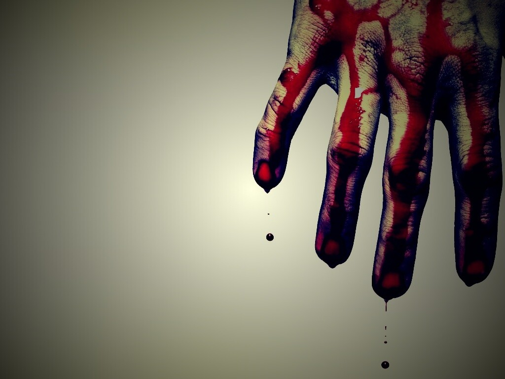

Консерва убийца
Он дёрнул дверь – заперта. Головная боль усиливалась, сосредоточиться
получалось плохо. «Нужно поесть!», - осенило его.
Месяц назад Ивану поставили сахарный диабет второго типа. Не критично, но прописали частое дробное
питание (если питаться редко – понижается уровень глюкозы,
начинается головная боль, слабость), но привыкнуть к новому режиму он ещё не успел. Схватив консерву
и с силой ударил ею об стол. Ни чего.
Ещё раз, ещё, ещё… удары следовали один за одним, но жесть не поддавалась, только искорёжилась.
«Может в карманах у человека есть нож!», - Иван опустился на колени и начал осторожно ощупывать
карманы покойника.
Точно! Вот и нож! Раскрыв лезвие, он с силой надавил на основание банки. Остриё заскользило по
плотному металлу, соскочило с кромки и врезалось в запястье.

Иван взвыл от боли, вскочил и зажимая открытую рану попятился назад. Сделав
несколько шагов, он затылком наткнулся на массивную деревянную полку… «Какой дурак…», - успел
вскрикнуть он и потерял сознание…